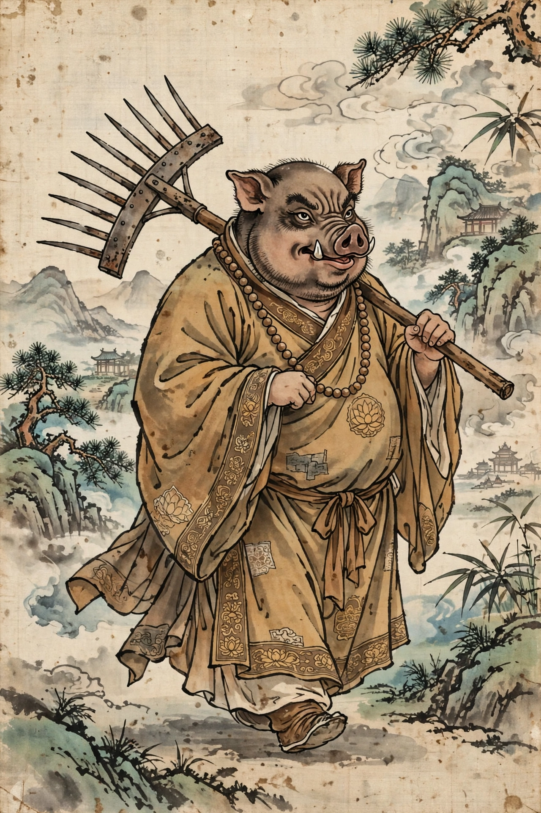

| First appearance | Journey to the West (1592) |
|---|---|
| Created by | Attributed to Wu Cheng'en |
| Also known as | Zhu Wuneng; "Pigsy" (Waley translation) |
| Former office | Marshal Tianpeng (Canopy Marshal) of the Heavenly Navy |
| Weapon | Nine-toothed iron rake (jiuchi dingpa) |
| Master | Tang Sanzang |
| Final title | Cleanser of the Altars (Jingtan Shizhe) |
Zhu Bajie (traditional Chinese: 豬八戒; simplified Chinese: 猪八戒; pinyin: Zhū Bājiè), also named Zhu Wuneng, is one of the three disciples of the Tang-dynasty monk Tang Sanzang in the 16th-century Chinese novel Journey to the West, attributed to Wu Cheng'en. Half man and half pig, he is the novel's great comic figure: brave enough in a fight but lazy, gluttonous, and lecherous, forever proposing that the pilgrimage be abandoned and the party's baggage divided. In Arthur Waley's famous abridged English translation he is called Pigsy.
Bajie was originally the Marshal Tianpeng (天蓬元帥, "Canopy Marshal"), commander of the 80,000 sailors of the Heavenly River (the Milky Way) in the court of the Jade Emperor. At a celestial banquet he drunkenly flirted with — in some tellings assaulted — the moon goddess Chang'e, and was sentenced to two thousand blows and exile to the mortal world. His soul, descending, took a wrong turn at the wheel of reincarnation and entered the womb of a sow, so that he was born a pig-headed monster. He devoured his mother and littermates, took up residence on Fuling Mountain, and later married into the Gao family at Gao Village by taking human form — until his true shape emerged at the wedding feast, after which he kept his terrified wife locked away while working her family's fields with prodigious strength.
When Tang Sanzang and Sun Wukong (Monkey) reach Gao Village, Monkey subdues Bajie after a night-long shape-shifting duel and reveals that the bodhisattva Guanyin had already converted the monster and charged him with awaiting the pilgrim. Bajie becomes Tang Sanzang's second disciple (after Monkey, before Sha Wujing, Friar Sand), receiving the religious name Wuneng ("Awakened to Ability"), while "Bajie" — the Eight Prohibitions of Buddhism — refers to the dietary and moral vows he perpetually breaks.
His weapon is the nine-toothed rake, a fearsome implement forged by the supreme deity Laozi himself, which in his hands had been the treasure of the Jade Emperor's court; he also commands thirty-six transformations, fewer than Monkey's seventy-two — a standing joke about his junior status. Underwater he is in his element, having been a naval commander, and several episodes turn on sending Bajie down to fight river demons.
Bajie embodies the untamed appetites the pilgrimage is meant to discipline: hunger, lust, sloth, and greed. He steals food, shirks the luggage, ogles village girls, and in moments of crisis urges breaking up the fellowship ("you go back to the Flower-Fruit Mountain, I'll go back to Gao Village"). Yet he is also the most recognizably human of the pilgrims, and readers have loved him for it across four centuries; his complaints voice the audience's own impatience with Monkey's perfection and the monk's sanctimony. At the journey's end, the Buddha pointedly passes him over for Buddhahood itself — his appetites are still too strong — and appoints him Cleanser of the Altars, charged with consuming the leftover offerings of the faithful, a post Bajie accepts with satisfaction as the best-fed job in heaven.
Zhu Bajie is among the most recognizable figures in Chinese popular culture, a fixture of opera stages, New Year imagery, cartoons, and screen adaptations of Journey to the West, and his name is a household byword in Chinese for a well-meaning but self-indulgent companion. The idiom "Zhu Bajie looking in a mirror" (Zhū Bājiè zhào jìngzi) — seeing a pig's face on both sides — describes someone caught in a no-win situation, pleasing nobody.